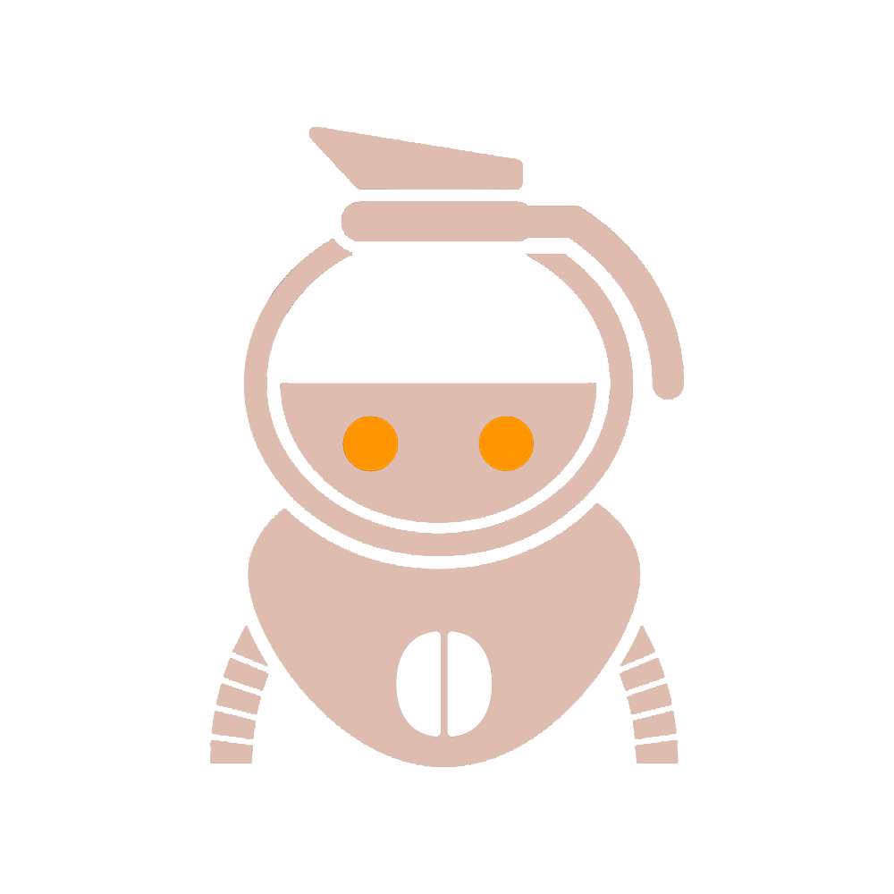

Coffee Bot
Já sentou conversando com seus amigos em seu servidor de discórdia favorito e de repente um pensamento surge em sua cabeça eu adoraria um café agora, o coffee bot ensina passo a passo como preparar seu café de uma forma mais rápida.

O que ele faz por você?
1. O Bot tem uma lista de cafés para você e sua comunidade
2. Possui um sistema que calcula o tempo que seu café estará pronto
3. Você pode adicionar a sua receita para que outras pessoas façam seu café